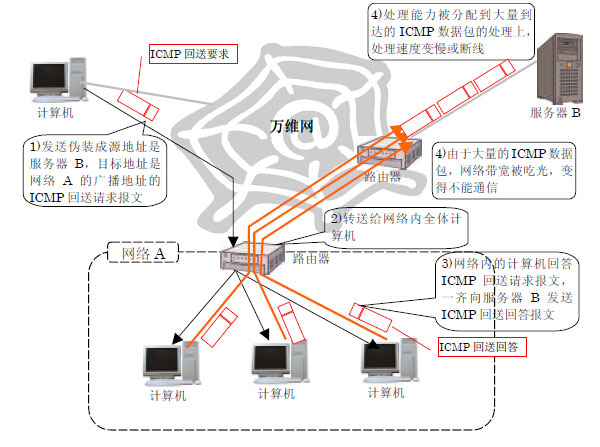
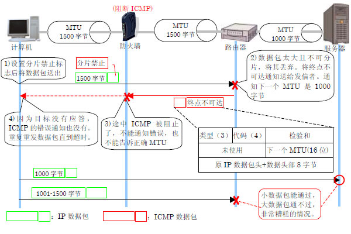

为什么停止方便的ICMP？
为什么有停止ICMP 使用的设定项目呢？理由只有一个，那就是确保安全。虽然ICMP 是非常便利的协议，但黑客在尝试非法访问的时候会被恶意利用。由于ICMP 被恶意使用而遭受损害的用户正在不断增加之中，因此有了限制ICMP 使用的意见。
ICMP数据包攻击
那么实际上，ICMP 被怎样恶意使用的呢？想考虑安全相关问题，不知道这个就开不了头。看两个典型的恶意使用例子吧。
作为恶意使用ICMP 的最有代表性的例子，也就是所谓的 “ping 洪水”的攻击。它利用ping 的原理，向目标服务器发送大量的ICMP 回送请求。这是黑客向特定的机器连续发送大量的ICMP 回送请求报文。目标机器回答到达的ICMP 回送请求已经用尽全力了，原来的通信处理就变得很不稳定了。进一步，目标机器连接的网络也可能由于大量的ICMP 数据包而陷入不可使用的状态。
与ping 洪水相似，以更加恶劣的使用方法而闻名的是称为“smurf”的攻击手法。smurf 同样，黑客恶意的使用ICMP 回送请求报文。这一点同ping 洪水是相同的。不过在smurf，对ICMP 回送请求实施了一些加工。源IP 地址被伪装成攻击对象服务器的地址，目标地址也不是攻击对象服务器的地址，而是成为中转台的网络的广播地址。
来具体看一下smurf 攻击的流程吧！

黑客发送伪装了的ICMP 回送请求后，到达在作为踏板的网络的入口处的路由器。这样，路由器将回送请求转发给网内所有的计算机（同2）。假如有100 台计算机，回送请求将到达100 台所有的计算机。收到回送请求的计算机对此作出反应，送出回送回答报文（同3）。这样，黑客送出的一个ICMP回送请求报文，一下子增加到了100 倍。
这样增加的ICMP 回送回答报文面向的不是黑客的计算机，而是伪装成回送请求的源IP 地址的攻击对象服务器。变成到达了，从几百台计算机发出的巨大数量的ICMP 回送回答。smurf 与ping 洪水攻击不同，因为到达服务器的是ICMP 回送回答，服务器不用返回回答。但是为了处理大量的ICMP，服务器承受了大量的负载。网路被撑爆了也是一样的（同4）。
除此之外，还有很多各种各样ICMP 被恶意使用的例子。例如，通知错误或询问信息本身，也有被黑客用来传递谎言的可能性。同用信鸽来扩展谎言的传播，通过传递与事实不同的信息来使人判断错误是一样的。而且，反过来也有传递错误信息而变成问题的例子。例如，在实现篇里看到的端口扫描，黑客就可以利用它来进行攻击对象的调查。进一步，推翻了“ICMP 是用来控制IP 的”这一常识的恶意使用方法也登场了。就是将ICMP 的选项数据部分作为信息搬运工的手法。黑客将这种工具隐藏在服务器里，从外部控制服务器，将用户的个人信息和重要的情报偷盗出来。如上，仅从安全的方面来说，ICMP 是有百害而无一利的。
阻止ICMP后将陷入困境
“那阻止所有的ICMP 不就行了吗！”可能有读者会这样认为。不过那就太轻率了。ICMP 作为支持IP的协议是需要的，所以被制作了。即使没有，也不是说IP 通信本身就完全不行了，实际上会出现几个难办的情况。
它的典型例子就是称为“黑洞路由器”的问题。所谓黑洞路由器，就是通信路径上的IP 数据包不留痕迹的消失了的现象。原因是，实现篇里说明的路径MTU 探索功能不起作用了。

假设通信路径上有因为MTU 大小不同而需要分片的路由器。而且，计算机和路由器之间，为了安全上的原因，设置了阻止ICMP 报文通过的防火墙。这种情况下，计算机实行路径MTU 探索将会怎么样呢？
1.不能调整数据包长度
如果是传送路径上不需要分片大小的IP 数据包，它将会毫无问题地到达对方。另一方面，数据包的长度是需要分片的时候，发送就会有问题。
正如实现篇看到的，这样的数据包到达连接在不同大小MTU 的网络的路由器后，路由器将用ICMP 终点不可达报文来通知发送方。本来的处理是，送信方接收到该ICMP 报文，根据路径MTU 探索处理调整MTU 大小后继续通信。但是，这次的例子，ICMP 报文被路经中的防火墙隔断了。路径MTU 探索功能不起作用，MTU 的大小也就不能调整了。
2.不知道原理就不可能理解
最近从局域网的计算机通过ADSL 服务访问万维网时，经常看到这个黑洞路由器现象。ADSL 线路的MTU 大小，宽带路由器的设定，Windows 的路径MTU 探索功之间互相关联引起了这个现象。糟糕的是，即使有黑洞路由器，也不是完全不能通信这一点。不管怎么样说，被吸进去的只是长度是需要分片的IP 数据包。也就是，考虑一下WEB 访问，连接WEB 服务器时是没有问题的，以文字为主体的页面也大都能被显示，但是含有比较大图像的页面不能被显示。黑洞路由器就由这种复杂奇怪的现象表现出来了。如果不知道路径MTU 探索和黑洞路由器的原理的话，碰到这种现象，可能连猜想原因都很困难了。
3.即使阻止了客户端也没问题
如最初所见，在现实的万维网上，如果事先使所有的ICMP 功能有效的话，就会给了黑客各种各样的机会，安全上就会有问题了。
另一方面，如果一个一个阻止了的话，不仅非常不方便，而且还会发生黑洞路由器等问题。那么，如何充分运用ICMP 才行呢？客户端，服务器，还有路由器，从各个方面来看一下。
首先从客户端开始。最近的宽带路由器和个人防火墙，通过设置来阻止ICMP 的很多。但是，初期设置是千差万别的。阻止全部ICMP 的也有，反过来的也有。其中，只允许ping 命令等一部分ICMP 报文通过的也有。
原来，对于安全的考虑方法是根据环境的不同而变化巨大的，并不是一定要这样才行的。但是，最近的倾向是，使连在万维网上的个人计算机不应答没有必要的ICMP 报文。例如Windows XP 的情况下，使用操作系统自带的个人防火墙的话，默认是将外部来的所有ICMP 报文隔断。
那么路由器怎么样呢？万维网中的路由器，不小心阻断了ICMP 的话，会发生黑洞路由器等问题。还有，大量的数据包涌过来的时候，如果不发送ICMP 源点抑制报文，处理速度就会跟不上。路由器的话，这样的情况以外，再加上考虑周围网络环境的基础上，再来判断是否阻断不需要的或者可能造成攻击的ICMP数据包比较好吧。
服务器就比较难判断了。例如，不让它回应ping 命令的话，连不上服务器的时候，就缺少了调查的有效手段。但是，有受到ping 洪水攻击的可能性也是事实。这些只能由管理者来判断了。